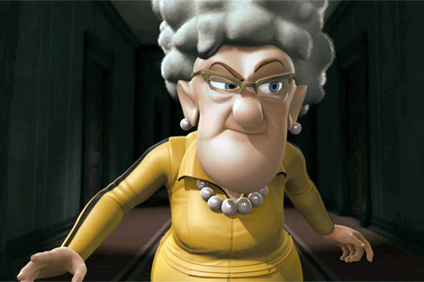
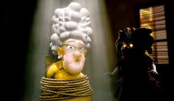
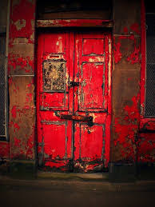

Grandma Gets Away
A Tale of The Misfortunate Twins

Grandma gets away in time and hurries along to continue watching the next episode of "keeping up with the Kardashian's". Her whole life she was never loved, not when she was a child nor as a young woman; she always had her guard up. She is a cold-hearted lady and is keeping children away from the world.
All of a sudden a strange creature breaks through the window and attacks the grandma. She was so frightened that she just froze and let him be. The creature grabbed the grandma and tided her up to a chair and he says to her "where are the twins"? The grandma shook her head, he asks her again with his daunting voice " Agatha, where did you lock the children away". She spits at him and replies "you will never find them". The creature wipes his face and tells her " if you want to play this game we can, but granny you ain't winning so either I take you or the kids". The choice was already made up in Agatha's head and of course, she picks herself. She replies to him saying " go, here are the keys to their door, its the only red door in the house".

Before the strange creature walks away looking for the red door, Agatha yells "hey wait, please untie me, I beg you please". He replies " its no fun when you don't have a challenge, toodles". He sets off looking for the red door

After about 20 minutes of looking for the big red doors, he finds them down in a basement. He finds the twins minding their business until they realized it is not their grandma that came for a visit. They instantly panic never seeing a creature like this. A creature is a man in a costume but didn't have enough time to explain since he needs to catch the kids. Out they went running through the door...
The Twins Get Sedated
BACK